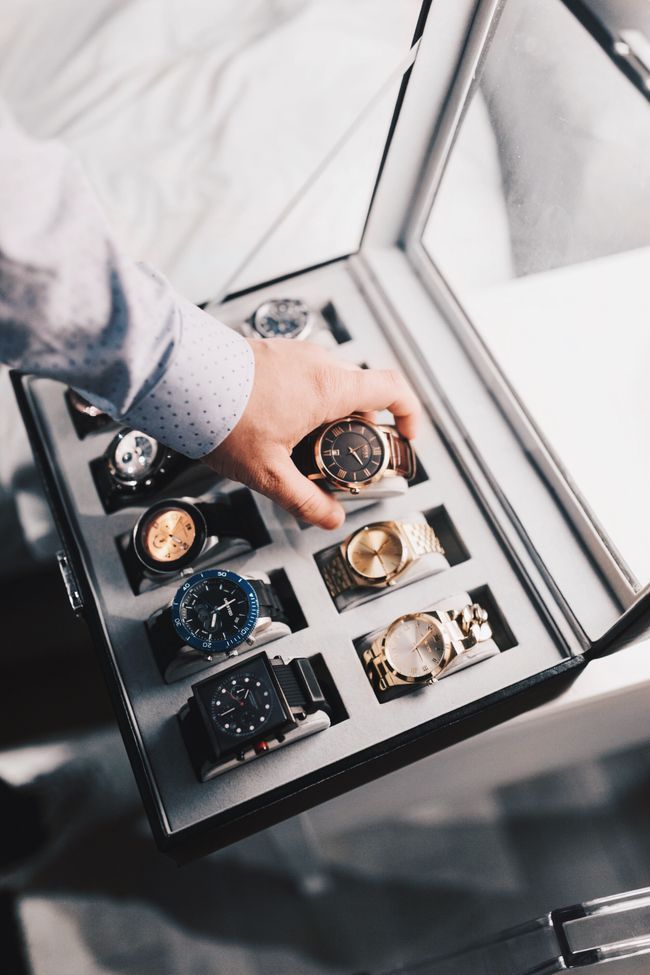
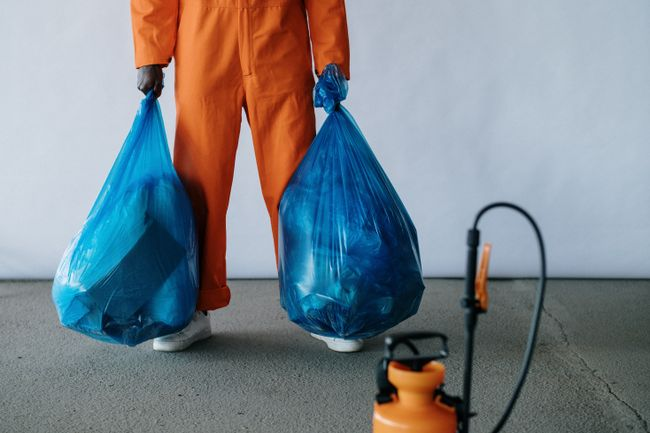
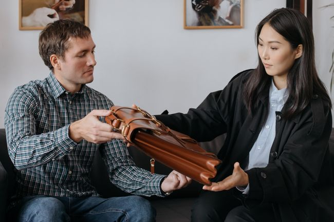
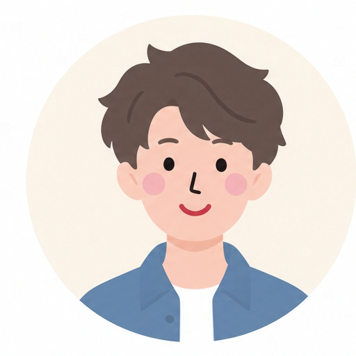
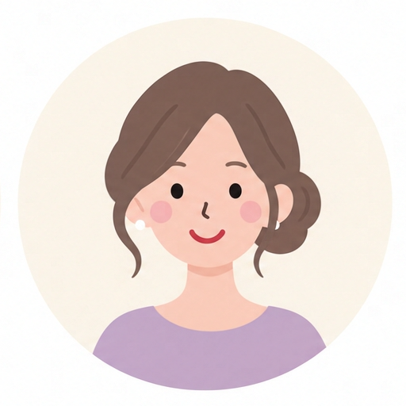
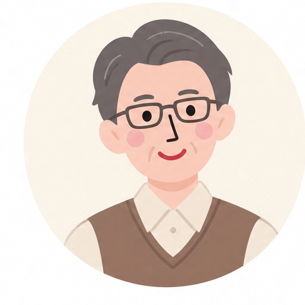
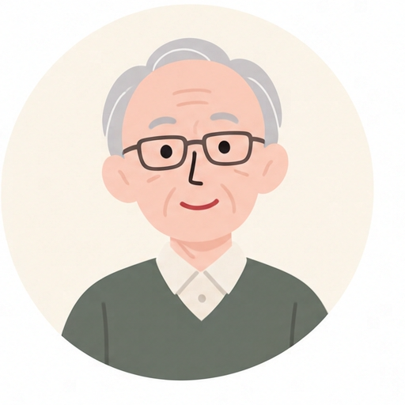

イメージ写真
イメージ写真一貫したサポート
査定から
家具・家電から、

東京都・神奈川県を中心に、
お住まいの地域に伺えるかどうかも、お気軽にお問い合わせください。

不用品の
エコリードなら、
ご相談から
「何が
そんな
スタッフが
金額と
お店まで
 相談して、よかった！イメージ写真
相談して、よかった！イメージ写真査定から
 イメージ写真
イメージ写真出張費・査定料・キャンセル料は
 イメージ写真
イメージ写真家電・
 イメージ写真
イメージ写真引越し・家財整理・生前整理・遺品整理も。
女性スタッフも
買取も、

イメージ写真01家具・家電・ブランド品など、

イメージ写真021点から
 イメージ写真03
イメージ写真03引越しの
 イメージ写真04
イメージ写真04ご実家の
これからの
 イメージ写真06
イメージ写真06思い出の
気に
テレビ、
※状態・年式・品目により、
身近な


※価格は
売れるか
はじめて
お電話・LINE・

日時を
品物を

金額と

エコリード現行サイトに

一人
暮らしの 引越しで、 家具の 処分を お願いしました。 朝お願い した その 日の うちに 対応して もらえて 助かりました。

不要に
なった 家電を まとめて 引き 取って もらいました。 見積りも その場で わかりやすく、 安心してお任せできました。

ブランド品や
貴金属も 一緒に 見て もらえて、 思った 以上の 査定額に びっくりしました。

実家の

実家の

遺品整理を
A. お電話・LINE・
A. 状態・年式・品目に
A. 品物や
A. はい、
A. お取引に
A. 当日の
A. 大量の
A. 片付け前の
ご相談・出張査定無料。
まずは気軽に